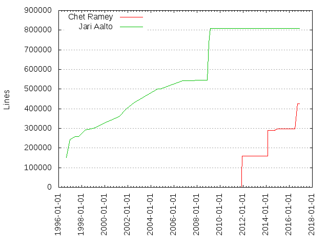
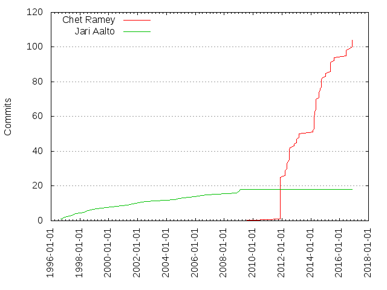

Authors
| Author | Commits (%) | + lines | - lines | First commit | Last commit | Age | Active days | # by commits |
|---|
| Chet Ramey | 104 (85.25%) | 425038 | 294513 | 2011-11-22 | 2016-11-15 | 1819 days, 17:38:43 | 28 | 1 |
| Jari Aalto | 18 (14.75%) | 809735 | 275158 | 1996-08-27 | 2009-02-20 | 4560 days, 3:58:58 | 18 | 2 |
| Month | Author | Commits (%) | Next top 5 | Number of authors |
|---|
| 2016-11 | Chet Ramey | 5 (100.00% of 5) | | 1 |
| 2016-09 | Chet Ramey | 1 (100.00% of 1) | | 1 |
| 2016-06 | Chet Ramey | 4 (100.00% of 4) | | 1 |
| 2015-08 | Chet Ramey | 3 (100.00% of 3) | | 1 |
| 2015-05 | Chet Ramey | 6 (100.00% of 6) | | 1 |
| 2015-01 | Chet Ramey | 3 (100.00% of 3) | | 1 |
| 2014-10 | Chet Ramey | 3 (100.00% of 3) | | 1 |
| 2014-09 | Chet Ramey | 3 (100.00% of 3) | | 1 |
| 2014-08 | Chet Ramey | 6 (100.00% of 6) | | 1 |
| 2014-05 | Chet Ramey | 7 (100.00% of 7) | | 1 |
| 2014-04 | Chet Ramey | 3 (100.00% of 3) | | 1 |
| 2014-03 | Chet Ramey | 8 (100.00% of 8) | | 1 |
| 2014-02 | Chet Ramey | 2 (100.00% of 2) | | 1 |
| 2013-03 | Chet Ramey | 3 (100.00% of 3) | | 1 |
| 2013-01 | Chet Ramey | 3 (100.00% of 3) | | 1 |
| 2012-11 | Chet Ramey | 2 (100.00% of 2) | | 1 |
| 2012-07 | Chet Ramey | 8 (100.00% of 8) | | 1 |
| 2012-06 | Chet Ramey | 1 (100.00% of 1) | | 1 |
| 2012-05 | Chet Ramey | 4 (100.00% of 4) | | 1 |
| 2012-03 | Chet Ramey | 4 (100.00% of 4) | | 1 |
| 2011-11 | Chet Ramey | 25 (100.00% of 25) | | 1 |
| 2009-02 | Jari Aalto | 1 (100.00% of 1) | | 1 |
| 2009-01 | Jari Aalto | 1 (100.00% of 1) | | 1 |
| 2008-11 | Jari Aalto | 1 (100.00% of 1) | | 1 |
| 2006-10 | Jari Aalto | 1 (100.00% of 1) | | 1 |
| 2005-12 | Jari Aalto | 1 (100.00% of 1) | | 1 |
| 2004-11 | Jari Aalto | 1 (100.00% of 1) | | 1 |
| 2004-07 | Jari Aalto | 1 (100.00% of 1) | | 1 |
| 2002-07 | Jari Aalto | 1 (100.00% of 1) | | 1 |
| 2001-11 | Jari Aalto | 1 (100.00% of 1) | | 1 |
| 2001-04 | Jari Aalto | 1 (100.00% of 1) | | 1 |
| 2000-03 | Jari Aalto | 1 (100.00% of 1) | | 1 |
| 1999-02 | Jari Aalto | 1 (100.00% of 1) | | 1 |
| 1998-07 | Jari Aalto | 1 (100.00% of 1) | | 1 |
| 1998-04 | Jari Aalto | 1 (100.00% of 1) | | 1 |
| 1997-09 | Jari Aalto | 1 (100.00% of 1) | | 1 |
| 1997-06 | Jari Aalto | 1 (100.00% of 1) | | 1 |
| 1996-12 | Jari Aalto | 1 (100.00% of 1) | | 1 |
| 1996-08 | Jari Aalto | 1 (100.00% of 1) | | 1 |
| Year | Author | Commits (%) | Next top 5 | Number of authors |
|---|
| 2016 | Chet Ramey | 10 (100.00% of 10) | | 1 |
| 2015 | Chet Ramey | 12 (100.00% of 12) | | 1 |
| 2014 | Chet Ramey | 32 (100.00% of 32) | | 1 |
| 2013 | Chet Ramey | 6 (100.00% of 6) | | 1 |
| 2012 | Chet Ramey | 19 (100.00% of 19) | | 1 |
| 2011 | Chet Ramey | 25 (100.00% of 25) | | 1 |
| 2009 | Jari Aalto | 2 (100.00% of 2) | | 1 |
| 2008 | Jari Aalto | 1 (100.00% of 1) | | 1 |
| 2006 | Jari Aalto | 1 (100.00% of 1) | | 1 |
| 2005 | Jari Aalto | 1 (100.00% of 1) | | 1 |
| 2004 | Jari Aalto | 2 (100.00% of 2) | | 1 |
| 2002 | Jari Aalto | 1 (100.00% of 1) | | 1 |
| 2001 | Jari Aalto | 2 (100.00% of 2) | | 1 |
| 2000 | Jari Aalto | 1 (100.00% of 1) | | 1 |
| 1999 | Jari Aalto | 1 (100.00% of 1) | | 1 |
| 1998 | Jari Aalto | 2 (100.00% of 2) | | 1 |
| 1997 | Jari Aalto | 2 (100.00% of 2) | | 1 |
| 1996 | Jari Aalto | 2 (100.00% of 2) | | 1 |
| Domains | Total (%) |
|---|
| case.edu | 102 (83.61%) |
|---|
| cante.net | 18 (14.75%) |
|---|
| caleb.ins.cwru.edu | 2 (1.64%) |
|---|